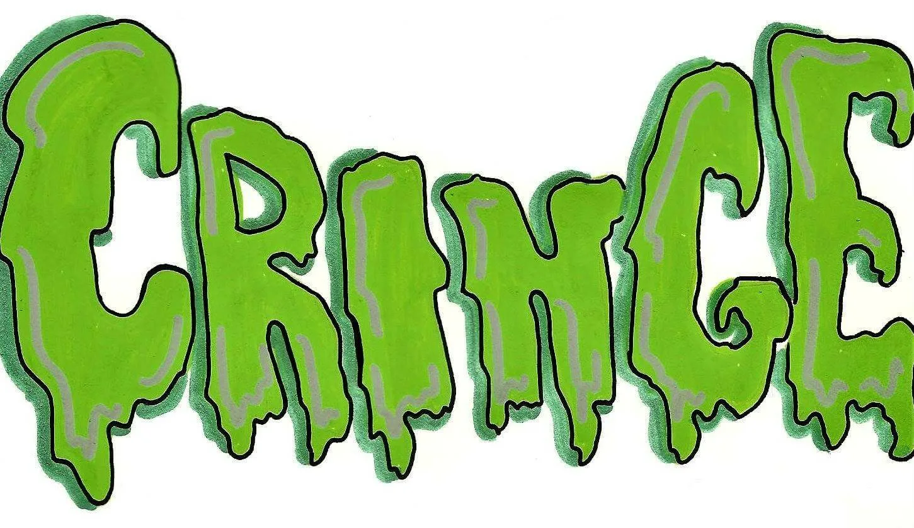

Иcпользование слова КРИНЖ можно часто увидить в переписке или в лексиконе подростка.
Кринж — знакомый нам «испанский стыд». Это калька с глагола to cringe — «поёживаться». Он ведёт себя кринжово, то есть заставляет других испытывать неловкость за своё поведение. Уверены, что такое поведение со стороны вашего подростка вам знакомо. Но и он о вас так думает, так что вы квиты.